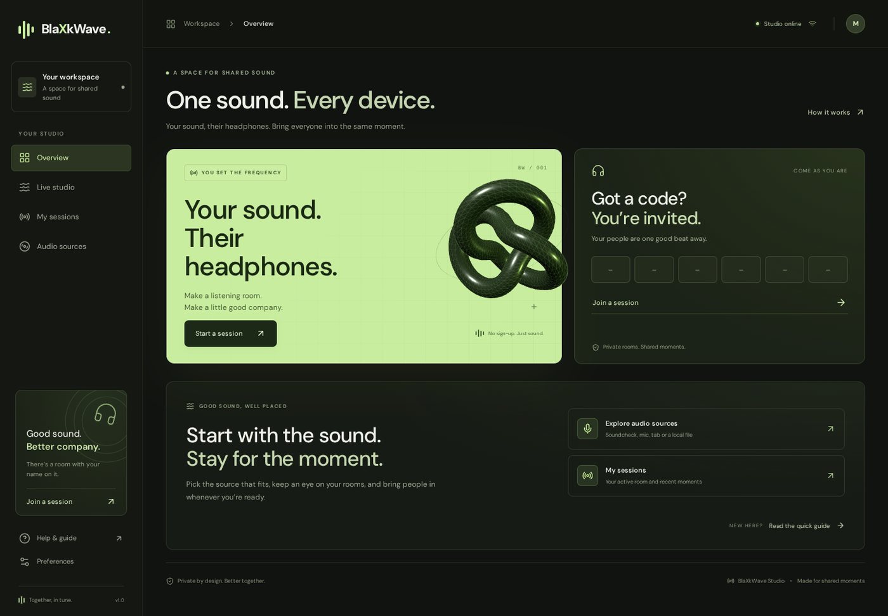
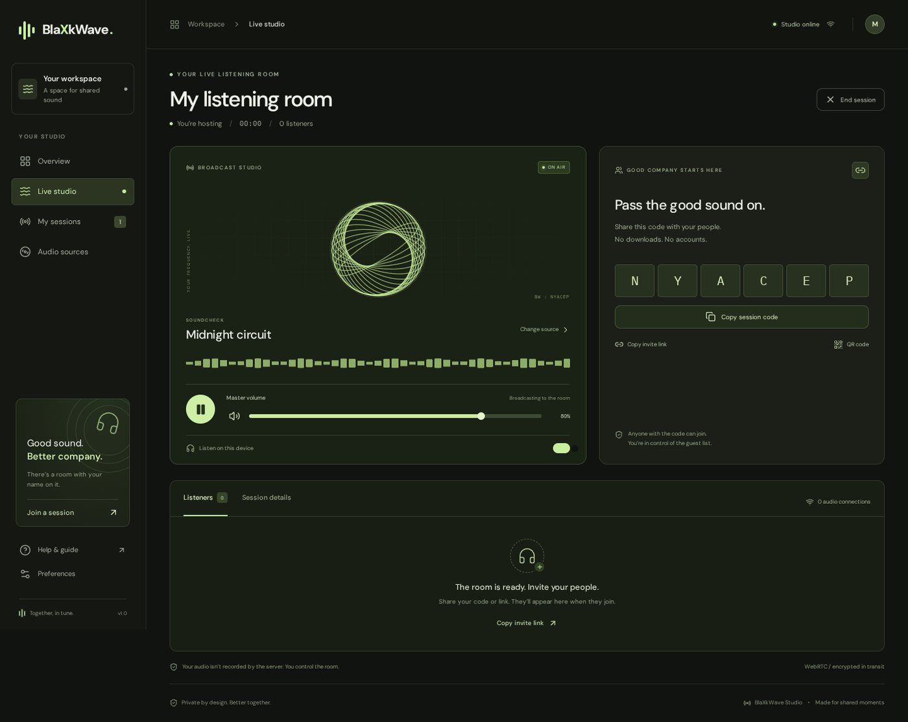
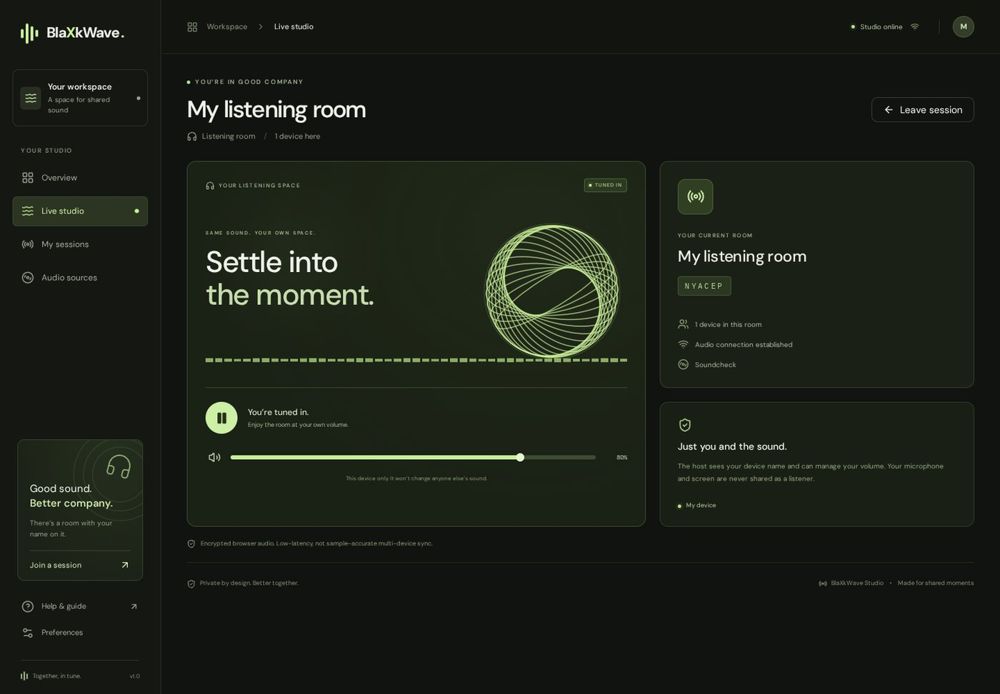
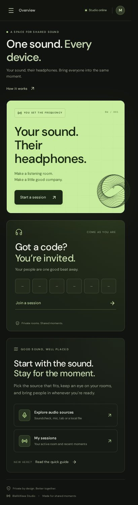

- Status
- prototype
- Language
- TypeScript
- Repository
- Blaxk-C137/BlaxkWave ↗
- Last push
- 2026-10-15
- Source size
- 97 files · 2532 KB
- Licence
- no licence file
The brief
Problem
Sharing audio in a room usually means either everyone hears the laptop speaker, or everyone installs something. Both are worse than they need to be: browser audio sharing is possible today, and a room code built on it needs no installation at all.
Who it is for
Groups in one place who want to listen to the same thing together, from a host's phone or laptop, each on their own headphones.
Approach
One real WebRTC peer connection per listener, signalled over a WebSocket with heartbeat and reconnection backoff. The host can broadcast a built-in generated loop, a microphone, a browser tab, or a local file, and keeps master gain, pause and per-listener volume control. Rooms use six-character invitation codes with clipboard links and real QR URLs.
Personal contribution
Sole author. This is a TypeScript rebuild of an earlier host/join prototype, restructured into directly addressable pages rather than one oversized dashboard.
Decisions that mattered
These are the choices that shaped the code — the ones worth explaining, rather than a feature list.
The honest audio scope is stated on the front page
The README says plainly that browser sharing uses low-latency WebRTC and is not sample-accurately synchronised across devices. Writing that down removes the expectation that a listener will hear a sample-perfect copy, which is the expectation that makes this kind of project look broken when it is not.
Every page is a real route
Overview, studio, sessions, sources, guide, preferences and /join/CODE12 all resolve on refresh and direct link, with browser history. A single-page app that loses its state on reload would be unacceptable for something you hand someone a link to.
A locally generated soundcheck instead of a streaming service
The bundled test loop is original and generated locally, so demonstrating the product does not depend on a third party's licence or availability.
Limitations, stated plainly
- Not sample-accurately synchronised across devices; it is designed for a shared room, not for distributed latency-critical playback.
- Microphone and screen capture require HTTPS, so a plain-IP local network test will not offer every source.
- Sessions and recent-room history are stored locally on the device, not in an account.
- It runs from the repository rather than from a hosted URL.
What this is not: there is no public deployment for this project, so it should not be described as live, available, in production, or used by anyone. Claims about scale or reliability would require measurements that do not exist.
Screenshots from the repository
These are the images committed to the public repository — not marketing renders and not re-creations. Each one is captioned with what it shows and links back to the source.




Source chamber
An excerpt recorded by repository, commit, path and line range — so this page can be checked against the code it describes at any time. Selectable text, never executed.
// No pinned excerpt has been reviewed for this project yet. // The chamber shows an empty state rather than filling the space with // unrelated code or a mock-up. The repository is linked above.
What it taught
The most valuable line in the whole README is the one admitting what the audio does not do. A precise limitation is what makes the rest of the claims believable.